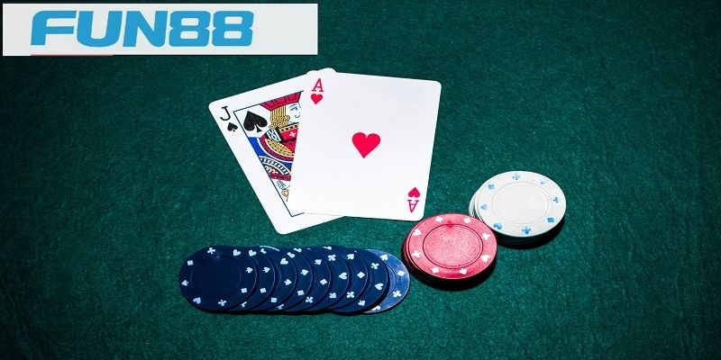
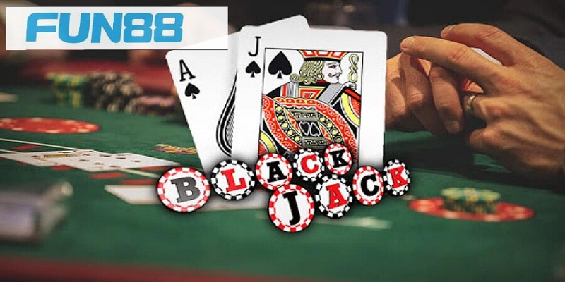

Blackjack Fun88 Và Những Lưu Ý Xương Máu Cho Anh Em
Blackjack Fun88: Chiến Thắng Với Chiến Lược Tối Ưu
Blackjack Fun88 hiện đang là trò chơi hấp dẫn nhất, thu hút được số lượng lớn bet thủ tham gia đông đảo. Bộ môn này đã trở nên quá quen thuộc với những tay cược lâu năm, nhưng còn xa lạ với anh em tân thủ. Vậy cùng Fun88 theo dõi bài viết dưới đây, để biết thêm được nhiều thông tin hơn nữa nhé!
Khái niệm về game bài Blackjack Fun88
Blackjack Fun88 hay còn được biết đến với cái tên như Xì lát hay Xì dách. Là trò chơi sử dụng bộ bài tây 52 lá để đánh, anh em sẽ phải đi so sánh điểm số với Dealer. Để cuối cùng xem ai là người chiến thắng ván bài, ở thể loại này thì số điểm cao nhất sẽ là 21.

Khái niệm về game bài Blackjack Fun88 nổi tiếng
Mục đích cuối cùng đó là cố gắng rút được những lá bài thật đẹp, để tổng điểm càng gần bằng 21 thì càng tốt. Nhưng người chơi cần phải đảm bảo rằng số nút của mình không được vượt quá mức đó.
Một số thuật ngữ trong Blackjack
Để có thể chơi Blackjack Fun88 tốt hơn nữa, thì việc tìm hiểu các thuật ngữ trong game bài đổi thưởng. Giúp cho bet thủ sẽ không còn cảm thấy bỡ ngỡ khi tham gia cược nữa. Vậy cùng xem những thuật ngữ ấy là gì nhé!

Thuật ngữ chơi game bài Blackjack Fun88
Kinh nghiệm chơi Blackjack Fun88 dành cho anh em tân thủ
BlackjackFun88 là một trong những trò chơi bài được người chơi tại đây yêu thích. Cùng tham khảo qua những kinh nghiệm đánh bài từ các lão làng sau đây, để có thể cải thiện được lối chơi và có thể cược một cách an toàn nhất.

Kinh nghiệm chơi Blackjack Fun88 dành cho tân binh mới
Nắm rõ luật chơi
Việc nắm chắc được các luật lệ trong trò chơi, cách tính điểm và quy định thắng thua. Sẽ góp phần làm cho quá trình đặt cược của anh em trở nên dễ dàng hơn. Mục tiêu của mọi người chỉ cần đạt được tổng giá trị của lá bài gần hoặc bằng 21 là được, nhưng phải cao hơn người chia bài thì mới thắng được.
Không những vậy, còn giúp cho các bạn có thể tự tin hơn trong những quyết định của bản thân. Mà không cần phải lo sợ điều đó làm có tốt không, hay là bị cuốn theo những ý kiến của người khác.
Quản lý vốn
Theo như lời khuyên từ các lão làng lâu năm trong giới, hành động đặt tiền quá nhiều cho 1 ván bài là điều không nên. Bởi cá cược là bộ môn rất khó để nói trước kết quả. Cho nên, hãy ra tiền một cách hợp lý và không để cảm xúc chi phối bản thân dẫn đến trường hợp đặt “lố tay”.
Có chiến thuật rõ ràng
Khi chơi bạn cần có chiến thuật hợp lý, biết khi nào nên rút thêm bài, dừng lại, tách bài hay cược gấp đôi. Anh em cũng nên đếm bài để biết được lợi thế của mình so với người chia bài.
Chọn bàn cược phù hợp
Lựa chọn một bàn cược phù hợp với tài chính và kỹ năng của bản thân là một điều cần thiết. Bạn cũng nên chú ý đến những sự kiện và khuyến mãi của game bài Blackjack nhà cái Fun88. Để có thể tận dụng những lợi tức đó, một cách triệt để giúp tăng cơ hội chiến thắng của anh em lên nhiều hơn.
Mẹo xem bài của các cao thủ
Để có thể chơi bài với tỷ lệ thắng vô cùng cao, những tay cược lâu năm luôn có những mẹo hữu ích. Các tân binh hãy tham khảo qua những điều sau, để có thể tăng trình độ của bản thân lên hơn nữa.
Bài viết trên là toàn bộ thông tin về game bài Blackjack Fun88. Fun88 hy vọng qua những điều ấy, giúp được cho các tân thủ hiểu rõ hơn về tựa game đình đám này và tìm được lối chơi phù hợp với bản thân.